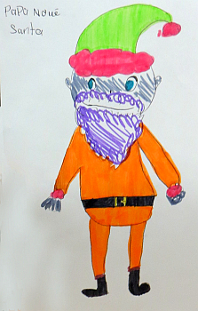

"J'voudrais qu'tu nouos cont'tais "l'Histouaithe de Sèrvelle de Noué," p'pèe," Souky m'dit l'aut' sé.
"Souky," j'li dis: "Je s'sais bein content dé l'faithe, mais n'y'a pas d'reun dans la Chronique de Samedi pour ch't' histouaithe-là. Tu pouorras la liéthe dans l'Almonah iun d'ches jours. Moussieu Delatchaine m'a dit tch'i' s'en va l'y mettre."
"Les gens du temps-passé passaient-i' lus Noué comme nous?" Souky continuit.
"Eh bein, ma fille," j'li dis: "A bein près la mème chose, - bieau qu'i' n'y avait pas d'motos comme acheteu, et l'monde restaient à passer lus Noué siez ieux. Ils învitaient toute la famille pour dîner et passer lus Noué ensemblye. Touos l's'anciens 'taient-là, - grand-péthes et grand'méthes, onclyes et tantes, couosîns et souosînes germains et r'mués. Mème quand y'avait ieu du brit dans la famille, tout 'tait oubliyé chu jour-là, et toute la famille s'assiévait à tabl'ye pour mangi l'dîner d'Noué! Et pis, ch'tait un fricot, chu dîner-là!"
"Tout l'monde allait à l'Egise lé matîn, et jamais nou né v'nait enn'yiés d'ouï l'Ministre vouos raconter l'histouaithe du preunmié Noué, quand un p'tit Efant, tout aussi înnocent comme touos l's'êfants nés d'nos jours, vînt au monde pour nouos apporter la bouanne nouvelle que l'Bouan Dgieu n'nouos avait pas abandonnés et qu'touos les gens sus a tèrre pouvaient héthiter l'Rouoyieaume des Cieux s'ils avaient la fouai dans Sa Parole! I' vouos semblyait que ch't'histouaithe-là vouos donnait du couothage pour èrquémenchi eune nouvelle année, et nou s'en r'allait siez-sé auve un esprit pus r'asseuthé et jouoyieux qué quand nou-s avait entré dans l'Egise. Chutte belle histouaithe-là vouos r'amémouoaithait vos p'tits jours, et oulle 'tait si rêélle tch'i' vouos semblyiait que ch'tait la preunmié fais qu'nou l'avait ouïe, et nou pouvait quâsi envisagi la lueur de la belle êtelle tch'avait montré le c'mîn ès Mêssieux tch'avaient té Lî porter des présents la sèrvelle!"

"Dans chu temps-là, personne ne doutait pas que Papa Noué faisait sa touanée touos l's'ans, et nou dîsait ès mousses qué s'i' taient mêchants, i' n'veindrait pas emplyi lus cauches la servèlle de Noué! J'mé r'souveins d'aver êprouvé bein des fais à m'garder rêvilli chutte niet-là pour le vaie v'nîn par la cheunm'née et met' dé tchi dans ma cauche! Mais j'm'endormais tréjous d'vant tch'i' vînsse!"
"La preunmié chose que nou faisait en s'rêvillant l'matîn d'Noué 'tait de r'garder tch'est qu'y'avait dans chutte cauche-là! Et oulle 'tait plienne d'oranges et d'codrettes et d'nouais et d'chucrîns. Dans les temps y'avait des trompettes ou des sûffliets et des p'tits tambours amathés à la cauche, et ch'tait-là qu'nou-s en faisait un tîntamarre! Ch'tait assez pour dêfoncer l's'ouothelles ès pouorres vièrs!"
"Oprès l'dîner d'Noué nou ouïyait l's'anciens raconter d's'histouaithes dé lus janne temps en feunmant lus pipes, et des légendes tch'ils avaient ouï d'lus péthes et grand-péthes. J'mé r'souveins d'ieune tchi m'împressionnait hardi. I' pathaît qu'à Mîniet la Sèrvelle de Noué touos les bestieaux dans l's'êtablyes lus m'taient à g'nouors, et que l'ieau tchi s'trouvait autchun bord, - dans un boutchet ou autchu aut' vessé, - touonait en sang!"
"I' pathaît, étou, que ch't'heuthe-là d'mîniet 'tait si solennelle que s'i' autchune personne éthait ieu malheur d'êt' dans l'êtablye pour vaie chu mithaclye-là s'faithe, ou' n'éthait jamais vêtchu pour le dithe à personne, car oulle éthait tchaie morte au moment du mithaclye! Et j't'asseuthe que tu n'éthais jamais fait iun d'ches anciens-là aller dans l'êtablye à mîniet la Sèrvelle de Noué!"
George d'La Forge
Les Chroniques de Jersey 27/12/1947
Viyiz étout: